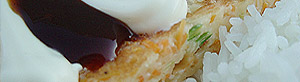

Japanische Omeletten
4,5 von 6eier, mehl, milch und wasser im mixer zerquirlen. salz, schwarzer pfeffer und 1-2 chillis beigeben
und nochmals mixen. gemüse (lauch, karotten, zwiebeln, stangen-sellerie etc) in ganz feine streifen schneiden oder raspeln.
teig und gemüse in einer schüssel mischen. 1:1. die fertige mischung in einer bratpfanne in etwas
öl beidseitig goldbraun braten.
mayonaise und diese japanische gemüsesauce (mikado jap.spezialitäten) auf den omeletten verteilen.
mit jasmin reis servieren.
